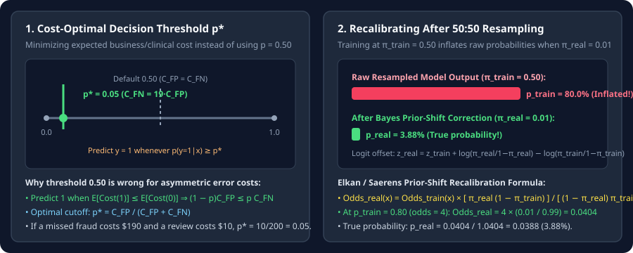

Post-Hoc Calibration, Cost-Optimal Thresholds, and Label-Shift Correction
Derive the cost-optimal threshold $p^*=C_{\text{FP}}/(C_{\text{FP}}+C_{\text{FN}})$ and the exact Bayes prior-shift formula that recalibrates probabilities after oversampling, undersampling, or class-weighted training.
Suppose your model is already trained. Two critical questions remain at deployment time: (1) What probability threshold $p^*$ should trigger a positive decision when false negatives and false positives have unequal costs? (2) If you trained with oversampling, undersampling, or class weights $\alpha_k$, why are the model’s output probabilities $\hat p$ severely miscalibrated—and how do you recover the true deployment probability $p_{\text{real}}(y=1\mid x)$ in closed form?
1. Derive the Bayes cost-optimal decision threshold $p^*$
Let $p=P(y=1\mid x)$ be the true calibrated probability that input $x$ belongs to the positive class. Suppose a false positive ($\hat y=1$ when $y=0$) incurs cost $C_{\text{FP}}>0$ and a false negative ($\hat y=0$ when $y=1$) incurs cost $C_{\text{FN}}>0$ (with zero cost for correct predictions). Compare the expected cost of predicting $\hat y=1$ versus $\hat y=0$:
Predicting $\hat y=1$ is optimal whenever $\mathbb E[\text{Cost}(\hat y=1\mid x)]\le\mathbb E[\text{Cost}(\hat y=0\mid x)]$. Solving for $p$ gives the exact Bayes cost-optimal threshold $p^*$:
Notice why the default $0.50$ threshold is almost never optimal on rare events: $p^*=0.50$ implicitly assumes $C_{\text{FP}}=C_{\text{FN}}$. If missing a fraudulent transaction costs $C_{\text{FN}}=\$190$ while reviewing a flagged transaction costs $C_{\text{FP}}=\$10$, the optimal threshold is $p^*=\frac{10}{10+190}=0.05$ ($5\%$).

2. Why resampling warps probabilities—and the exact Bayes correction
When you train a model using class-balanced sampling ($\pi_{\text{train}}=0.50$) or positive class weight $\alpha_+$, the model’s output $p_{\text{train}}(y=1\mid x)$ is calibrated for $\pi_{\text{train}}=0.50$, not for the real deployment prevalence $\pi_{\text{real}}=0.01$. Because resampling changes the class prior $P(y)$ while leaving the within-class feature distribution $P(x\mid y)$ unchanged, Bayes’ theorem relates the real posterior odds to the training posterior odds:
In logit space ($z=\log\frac{p}{1-p}$), multiplying the odds by $\rho$ is simply adding $\log\rho$ to the logit $z_{\text{train}}$:
Worked numerical check: Suppose you balanced a $\pi_{\text{real}}=0.01$ dataset to $\pi_{\text{train}}=0.50$, and on a test customer the balanced model predicts $p_{\text{train}}=0.80$ (training odds $=0.80/0.20=4.0$):
Without prior-shift correction, reporting “$80\%$ fraud probability” to a downstream risk engine when the true probability is $3.88\%$ causes catastrophic over-triggering!
3. End-to-end decision guide across all 7 chapters
| Problem Regime | Recommended Training Pipeline | Inference / Calibration Rule |
|---|---|---|
| Binary tabular / rare event ($\pi_+\le 1\%$) | Initialize bias $b_0=\log(\pi_+/\pi_-)$; train with standard or Focal Loss; tune threshold on validation PR curve. | If undersampled/oversampled, apply prior-shift correction $\rho$, then threshold at $p^*=C_{\text{FP}}/(C_{\text{FP}}+C_{\text{FN}})$. |
| Multi-class long-tailed vision/audio ($\text{IF}=100\text{–}1000$) | Option A (1-stage): Balanced Softmax / Logit Adjustment ($z_k+\tau\log\pi_k$). Option B (2-stage): Stage 1 at $q=1$, Stage 2 with cRT or $\tau$-norm. | Predict $\arg\max_k z_k$ (for Balanced Softmax / cRT) or $\arg\max_k(z_k-\tau\log\pi_k)$ (post-hoc LA). |
| Dense segmentation ($99.8\%$ background pixels) | Combo Loss: $0.5\,L_{\text{BCE}}+0.5\,L_{\text{Dice}}$ (or Tversky with $\alpha=0.3,\beta=0.7$ when recall is critical). | Tune foreground mask threshold on validation Dice / IoU. |
| Multi-label tagging ($K\ge 50$ independent classes) | Asymmetric Loss (ASL) with $\gamma_+=0,\gamma_-=4$, probability shift $m=0.05$. | Per-class threshold tuned for validation Macro-$F_1$. |
4. PyTorch implementation: Prior-shift recalibration & $F_\beta$-optimal threshold search
import torch
def recalibrate_logits_for_prior_shift(
logits_train: torch.Tensor, pi_train: torch.Tensor, pi_real: torch.Tensor
) -> torch.Tensor:
"""
Works for both binary (1D logit) and multi-class (K-D logits):
z_real = z_train + log(pi_real) - log(pi_train)
"""
if logits_train.ndim == 1 or logits_train.size(-1) == 1:
shift = torch.log(pi_real / (1.0 - pi_real)) - torch.log(pi_train / (1.0 - pi_train))
return logits_train + shift
return logits_train + torch.log(pi_real.clamp(min=1e-12)) - torch.log(pi_train.clamp(min=1e-12))
def find_best_fbeta_threshold(probs: torch.Tensor, targets: torch.Tensor, beta: float = 1.0) -> tuple[float, float]:
thresholds = torch.linspace(0.01, 0.99, 99, device=probs.device)
best_t, best_score = 0.5, -1.0
beta2 = beta ** 2
for t in thresholds:
preds = (probs >= t).float()
tp = (preds * targets).sum()
fp = (preds * (1.0 - targets)).sum()
fn = ((1.0 - preds) * targets).sum()
fbeta = ((1.0 + beta2) * tp) / ((1.0 + beta2) * tp + beta2 * fn + fp + 1e-12)
if fbeta.item() > best_score:
best_score, best_t = fbeta.item(), t.item()
return best_t, best_score5. Questions worth answering
Multiplying positive losses by $\alpha_+$ is equivalent to multiplying the positive count $n_+$ by $\alpha_+$, so the effective training prior odds are $\frac{\pi_{\text{train}}}{1-\pi_{\text{train}}}=\alpha_+\frac{\pi_{\text{real}}}{1-\pi_{\text{real}}}$. Subtracting $\log\alpha_+$ from the trained logit recovers the true calibrated log-odds!
Always on a held-out validation set whose class distribution matches deployment (or after applying the prior-shift formula). On the training set, neural networks memorize minority examples with $p_i\approx 0.99$, which biases the threshold upward.